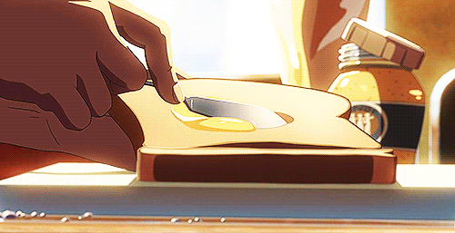

Sanduíche de pasta de amendoim com geléia

Descrição
Nada mais aconchegando do que uma clássica receita de sanduíche de paste de amendoim com geléia.
Ingredientes
- 2 fatias de pão de forma
- 2 colheres de pasta de amendoim
- 2 colheres da sua geléia favorita.
Modo de preparo
- Espalhe a pasta de amendoim em uma das fatias de pão.
- Espalhe geléia na outra fatia de pão
- Junte as duas fatias, formando um sanduíche
- Corte ao meio formando dois triangulos. Aproveite!